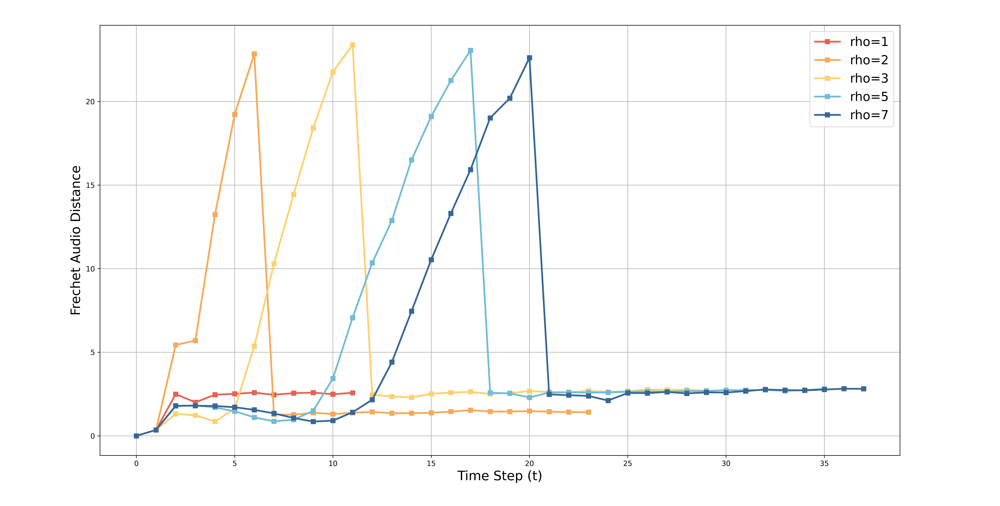

ConSinger: Generate High-Fidelity Singing Voice via Few Steps
Abstract
Singing voice synthesis (SVS) system is expected to generate high-fidelity singing voice from given musical scores (e.g., lyrics, duration and pitch). Recently, diffusion models have performed well in this field. However, sacrificing inference speed to exchange with high quality sample generation has limited its application scenarios. In order to obtain high-quality synthetic singing voice more efficiently, we propose a singing voice synthesis method based on consistency model, ConSinger, to achieve high-quality singing voice synthesis via few steps. The model is trained by applying consistency constraint and the generation quality is greatly improved at the expense of a small amount of inference speed. Our experiments show that ConSinger is highly competitive with the baseline model in terms of generation speed and quality. Extended experiments also prove that the proposed method can be extended to text-to-speech task (ConSpeech).
Singing voice synthesis
The below audio samples show the comparison between ground-truth (GT), GT(mel + HiFiGAN), FFTSinger, DiffSinger, ConSinger(v3). Samples are selected from the test dataset of PopCS.
Sample 1: 倘若我心中的山水，你眼中都看到，我便一步一莲花祈祷
| GT | GT (mel + HiFiGAN) | FFTSinger (NFE:1+0, RTF:0.0166) |
|---|---|---|
| DiffSinger (NFE:1+51, RTF:0.0516) |
ConSinger (NFE:1+1, RTF:0.0188) |
|---|---|
Sample 2: 没办法好可怕，那个我不像话，一直奋不顾身
| GT | GT (mel + HiFiGAN) | FFTSinger (NFE:1+0, RTF:0.0166) |
|---|---|---|
| DiffSinger (NFE:1+51, RTF:0.0516) |
ConSinger (NFE:1+1, RTF:0.0188) |
|---|---|
Sample 3: 抱一抱，就当作从没有在一起，好不好，要解释都已经来不及
| GT | GT (mel + HiFiGAN) | FFTSinger (NFE:1+0, RTF:0.0166) |
|---|---|---|
| DiffSinger (NFE:1+51, RTF:0.0516) |
ConSinger (NFE:1+1, RTF:0.0188) |
|---|---|
Text-to-speech
The below audio samples show the comparison between ground-truth (GT), GT(mel + HiFiGAN), FastSpeech2, DiffSpeech, ConSinger(v2). Samples are selected from the test dataset of LJSpeech.
Sample 1: Printing, in the only sense with which we are at present concerned, differs from most if not from all the arts and crafts represented in the Exhibition
| GT | GT (mel + HiFiGAN) | FastSpeech 2 (NFE:1+0, RTF: 0.0211) |
|---|---|---|
| DiffSpeech (NFE: 1+71, RTF:0.1166) |
ConSpeech (v2) (NFE: 1+1, RTF:0.0245) |
|---|---|
Sample 2: so were candles, salt, pepper, mops and brooms. But the latter could have been of little service. Dirt prevailed everywhere
| GT | GT (mel + HiFiGAN) | FastSpeech 2 (NFE:1+0, RTF: 0.0211) |
|---|---|---|
| DiffSpeech (NFE: 1+71, RTF:0.1166) |
ConSpeech (v2) (NFE: 1+1, RTF:0.0245) |
|---|---|
Ablation Studies
ConSinger was inspired by an ablation experiment. When performing ablation experiments on our model, we found that the result quality restored by ConSinger(v2) is not simply linear with the level of noise on both SVS and TTS.

We change the parameter ρ and generate results at different noise levels. Due to consistency model itself, different ρ will cause PF ODE to have different lengths

Same as DiffSinger, ConSinger (v2 & v3) denoise prior knowledge with noise to get better results. That is, the supplementary decoder provides the mel-spectrogram skeleton for the model, the addition of a small amount of noise on this basis helps the denoiser to perform a more elaborate carving. Our experimental results show that DiffSinger does not fully exploit the performance of the network by predicting and denoising a small amount of noise at a time, and therefore it consumes abundant inference time. Please refer to the paper for more technical details and explanations.